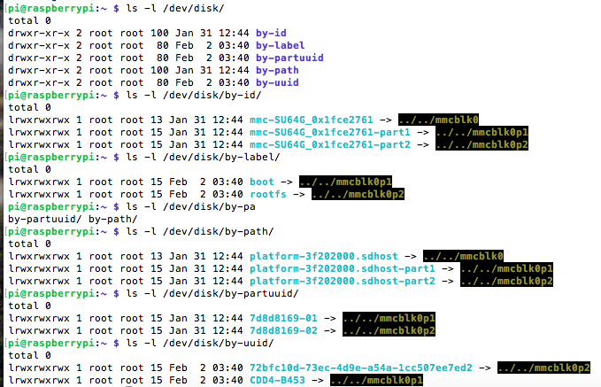

Programming, robotics, traveling
Как видно из скриншота ниже, в ОС для удобства обращения к блочным устройствам автоматически создаются различные симлинки.

UUID задается при форматировании файловой системы и хранится в её суперблоке. Поэтому при побайтовом копировании разделов UUID не меняется.
При подключении нескольких блочных устройств с одинаковыми UUID, в /dev/disk/by-uuid отображается только последнее подключенное устройство. Подробнее rus-linux.net.
PARTUUID также не меняется при побайтовом копировании. А также не меняется при ручном изменении размера файловой системы. Однако, как пример, в Raspberry Pi при первом запуске системы вызывается raspi-config для расширения rootfs раздела до максимально возможного. При её исполнении меняется partuuid, а также меняется partuuid указанный в /boot/cmdline.txt).
Подробнее о разнице UUID и PARTUUID здесь raspberrypi.stackexchange.com.
Файл /boot/cmdline.txt содержит сроку аргументов для загрузчика. В параметре “root” указывается путь к разделу rootfs.
dwc_otg.lpm_enable=0 console=serial0,115200 console=tty1 root=PARTUUID=7d8d8169-02 rootfstype=ext4 elevator=deadline fsck.repair=yes rootwait
Вместо указания конкретного PARTUUID (например root=PARTUUID=37665771-02), можно использовать root=/dev/sda2.
Не работают следующие варианты:
root=UUID=<валиндый UUID как в /dev/disk/by-uuid/\*>root=PATH=<валидный путь как в /dev/disk/by-path/\*>root=/dev/disk/by-path/<валидный идентификатор пути>В
raspi-configжестко прописаны/dev/mmcblk0и/dev/mmcblk0p2, поэтому, чтобы сделать resize с помощью этой утилиты на usb-флешкарте нужно заменить эти строки на пути mountpoint'ам usb-флешки, например на/dev/sdaи/dev/sda2.cp /usr/bin/raspi-config ~ sed -i 's/mmcblk0p/sda/' ~/raspi-config sed -i 's/mmcblk0/sda/' ~/raspi-config sudo ~/raspi-config
Для копирования ОС можно воспользоваться утилитой dd. Она умеет побайтово копировать. Она работает с абстракцией файла, поэтому может производить копирование блочных устройств в файлы и наоборот совершенно прозрачно.
sudo dd status=progress if=/dev/mmcblk0 of=<filename.img> bs=100M count=3065
if – устройство источникof – устройство получательbs – размер чанка для копированияcount – количество чанков для копирования (можно указат чуть больше)status – вывод в терминал статуса копирования. В некоторых пакетах dd не предусмотрен показ статус, тогда для этого можно воспользоваться утилитой pv. Подробнее на askubuntu.com.Также у этой утилиты есть и другие параметры, например параметр смещения seek.
Форматирование фaйловой системы mkfs
sudo mkfs -t ext4 -L root /dev/sda6
mkfs [options] [-t <type>] [fs-options] <device> [<size>]
Резервирование места на диске
sudo tune2fs -m1 /dev/mmcblk0p2
tune2fs 1.43.4 (31-Jan-2017)
Setting reserved blocks percentage to 1% (19287 blocks)
Источники